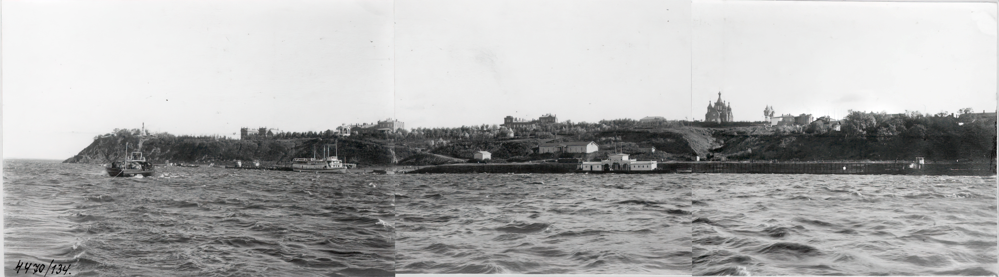

О проекте
В современном мире, насыщенном цифровыми технологиями, пленочная фотография вновь занимает значимое место. Процесс съемки на пленку требует знаний и навыков, что делает каждое изображение результатом ручного труда, а не просто следствием автоматических процессов.
Город Хабаровск имеет богатую историю и уникальную архитектуру, которую я хотел бы представить через объектив классической фотокамеры. Каждый кадр — это возможность увидеть город глазами прошлого и сравнить его с настоящим.
Панорама города с Амура